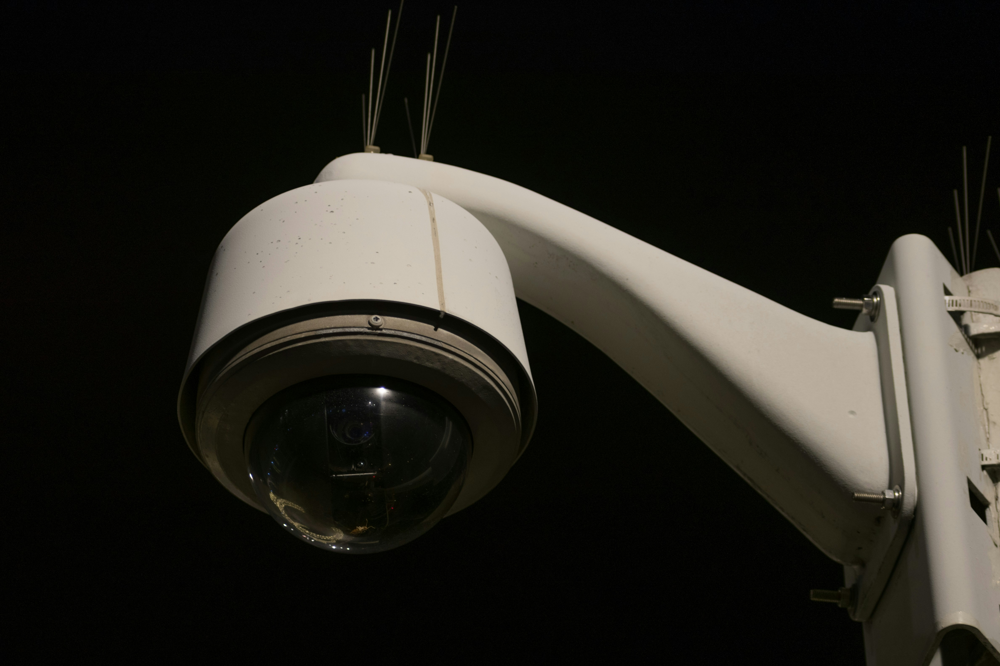

-
1. Smart Home Assistants: The Voice-Activated Hub of Your Home

At the forefront of AI in our homes are smart assistants like Amazon Alexa, Google Assistant, and Apple’s Siri. These devices can now perform complex tasks based on voice commands, acting as a central hub to control smart home devices. With the power of AI, they can do more than just answer questions or play music—they can learn user preferences and routines to make proactive suggestions.
For instance, Alexa can suggest reminders for daily tasks or reorder household essentials based on past shopping behavior. Google Assistant has advanced to integrate deeply with Google services, allowing it to answer specific questions related to your Google Calendar, reminders, and emails, enhancing productivity. The adaptive nature of these assistants makes them invaluable as they continually learn to anticipate needs and deliver a customized experience for each user.Click here to see more
-
2. AI-Enhanced Security Cameras: Smarter and Safer Homes
Home security has been revolutionized with devices like the Ring Video Doorbell, Google Nest Cam, and Arlo Smart Security Cameras. These AI-driven cameras go beyond traditional motion detection. Using machine learning, they can differentiate between people, animals, vehicles, and even recognize familiar faces. This means fewer false alerts and more relevant notifications when real threats are detected.
For instance, Ring's advanced AI can send alerts to your phone, complete with a video feed, if it recognizes a visitor’s face or detects unusual activity. Nest Cams use AI to distinguish between harmless background movements (like swaying trees) and actual security threats, and their facial recognition feature allows the device to alert you to specific people at your door. These cameras are setting new standards for home security, providing peace of mind with real-time, intelligent surveillance.Click here to see more
-
3. Wearable Health Trackers: AI on Your Wrist for Health Insights

Wearable health technology has become one of the most exciting areas of AI. Gadgets like the Apple Watch Series 9, Fitbit Sense 2, and Oura Ring have evolved to provide a wide range of health metrics and personalized insights. These wearables now use AI to analyze patterns in heart rate, physical activity, sleep quality, and even blood oxygen levels, delivering health data that was once available only in medical facilities.
The Apple Watch’s latest iterations use AI to detect irregular heart rhythms, notify users of potential health issues, and even recommend emergency help if it detects a serious fall. Fitbit’s Sense 2 offers stress management insights based on skin temperature and heart rate variability, which is processed by AI algorithms to provide personalized recommendations for relaxation techniques. The Oura Ring, known for its advanced sleep tracking, leverages AI to assess and report on sleep quality, restfulness, and recovery, helping users optimize their rest patterns.Click here to see more
-
4. AI-Powered Kitchen Appliances: Bringing Smart Tech to Cooking

AI has even found its way into the kitchen with smart appliances like June Oven, Tovala Smart Oven, and Instant Pot Pro Plus. These devices use machine learning to identify food items and recommend cooking settings automatically, making cooking as effortless as possible.
The June Oven, for example, can recognize over 50 types of food, from frozen pizza to fresh vegetables, and automatically adjust cooking times and temperatures for the perfect result. The Tovala Smart Oven pairs with meal kits and scans food packaging to select the best cooking mode. These appliances are ideal for busy professionals and families, combining the convenience of AI with precision cooking, ensuring meals are prepared to perfection without the need for manual adjustments.Click here to see more
5. AI in Personal Finance: Smart Wallets and Financial Management Apps

Managing finances has become much easier with AI-powered gadgets and applications such as Samsung Pay, Apple Wallet, and the YNAB (You Need a Budget) app. These tools use AI to analyze spending patterns, categorize expenses, and even provide budget recommendations tailored to your habits.
For example, Samsung Pay and Apple Wallet utilize machine learning to track transaction histories and offer spending insights based on your habits, helping you manage finances better. Apps like YNAB use predictive AI to suggest saving goals and expense adjustments, providing a more personalized approach to budgeting.Click here to see more
6. Cleaning Robots: AI for Housekeeping

AI-powered cleaning robots, such as the iRobot Roomba j7+ and Roborock S8 Pro, are redefining the way we maintain our homes. These robotic vacuum cleaners use advanced AI algorithms to map home layouts, avoid obstacles, and identify specific areas needing attention.
The Roomba j7+, for example, uses cameras and machine learning to detect and avoid obstacles like pet waste or cables, making it a more intelligent cleaning solution. It can also learn room layouts over time, allowing users to customize cleaning routines for specific areas. Roborock's latest models feature mopping capabilities along with vacuuming, using AI to detect and avoid carpeted areas while mopping.Click here to see more
Conclusion
From health tracking and home security to kitchen assistance and personal finance, AI-powered gadgets are transforming the way we live, making everyday tasks simpler, safer, and more efficient. These devices are not only saving us time and effort but also providing us with personalized insights and recommendations tailored to our needs. As AI technology continues to evolve, we can expect even more innovations that make our homes, health, and lifestyles smarter and more intuitive.